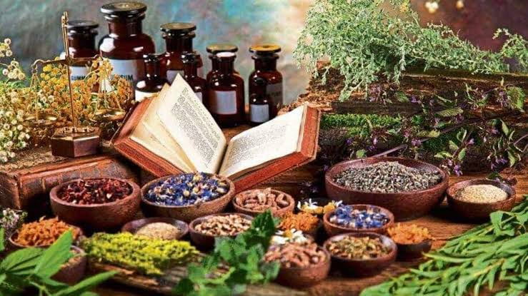

Ayurveda is a natural health care system that emphasizes the treatment of disease in a highly individualized manner as it believes that every individual is unique having a different constitution. It classifies all individuals into different 'Prakruti' types based on the theory of tridosha and each type has a varying degree of predisposition to different diseases. This is independent of racial, ethnic, or geographical considerations. Knowing which particular Prakruti one belongs to, enables them to decide the preference of food which suits them best. By following the rules and regulations regarding food and lifestyle, one can prevent themselves from getting inflicted with various diseases. But, Prakruti assessment is a tedious process that requires the individual to visit the physician followed by a long list of questions in order to reach a conclusion. In order to make this process more convenient, the development of a self- assessment tool with the help of artificial intelligence may prove to be a stepping stone. A Chatbot which has pre-recorded questionnaire may help in the Prakruti assessment depending upon the responses given by an individual.
